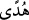

1- Nefse gâlib gelmek: Muttakîler, hevâlarına kanmadılar ve dünyâya aldanmadılar,
dünyânın câzibesi onları azdırmadı. Şeytan onları vesvese ve kötü arkadaşla fitneye
düşürüp yoldan çıkaramadı.
2- Küfür, dalâlet, bid’at, cehâlet, nefse aldanma, şeytanın vesvesesi, îmânın
kaybolması, güvenin yok olması, kabirde yalnızlık, kıyâmette güçlük, sıratta ayak
kayması, zebânîlerin eline düşmek, cenneti kaçırma ve mahrûmiyet çağrısı gibi
tehlikelerden kurtulmaktır.
3- Ebedî cennet nimetleri içinde kalmak, sonsuz bir devlete, bitmeyen nimete, hüznü
olmayan sevince, ihtiyarlığı olmayan gençliğe, sıkıntısı olmayan rahata, hastalığı
olmayan sıhhate, hesâbı olmayan âhırete, hıcâbı olmayan cemâle kavuşmaktır. Tefsîru’t-
Teysîr’de böyle yazılıdır.
Vaîdîler bu âyete dayanarak ehl-i kıble olan günahkârların da cehennemde devamlı
kalacakları tarzındaki görüşlerini takviyeye çalışmışlardır. Ancak bu iddiâ şu şekilde
reddedilir:
Âyetteki felâha erenlerden murâd, felâhta kemâle erenlerdir. Bunun tabîî sonucu, o
felâha erenlerin özelliklerini taşımayanlar için kâmil mânâda felâh yok demektir.
Nitekim Beyzâvî Tefsîri’nde böyle gelmiştir.
Şeyh Necmüddin Dâye (k.s.) der ki: “__WORD__” kelimesinin nekre olması, Allah’ın
sırlarından bir sır, nûrlarından bir nûr, lütuflarından bir lütuf ve hakîkatlerinden bir
hakîkattir. Allah’ın nebîlere ve velîlere ihsân ettiği şeylerin tümü, O’nun zâtî in’âmının,
ihsânının ve sıfatının kemâli yanında okyanustan bir damla mesâbesindedir. Nitekim Hz.
Peygamber (s.a.) buyurur: “Allah’ın hazînesi dopdoludur. Gece ve gündüz ondan
yapılan infâk onu eksiltmez.”[194]
Hidâyet kelimesinin nekre olmasında şöyle zarîf bir işârî anlam daha vardır.
Müttakîler bu hidâyet sâyesinde sana ve senden öncekilere indirilene inanırlar ve
âhıreti îkân ile kabûllenirler. Onlar felâh ehlidirler ki, vücûd perdesinden, namaz ışığı
ile kurtulmuşlardır ve âhıreti müşâhede etmişlerdir. Hidâyete inâyetleri onları kurb
makamına ve izzet menziline ulaştırır. O’na kavuşma menzilinden başka yerde
konaklamazlar, O’nun bahçesinin dışına bir adım atmazlar. Büyük bir saâdete ererek
yüksek derecelere kavuşur ve Hakk Teâlâ’nın şu kavlinin anlamını tam olarak
gerçekleştirirler: “Dönüş şüphesiz Rabbinedir.” (el-Alâk, 96/8)
Mevlânâ Celâleddîn Rûmî (k.s.) der ki:
Eğer istersen gündüz gibi nûrlu ve aydınlık olmak
Gece gibi karanlık olan vücûd varlığını yak,
Varlığın, merhametli olan Hakk’ın varlığındandır.
Maddî olan varlığını kimyâ-yı mârifet içinde erit.